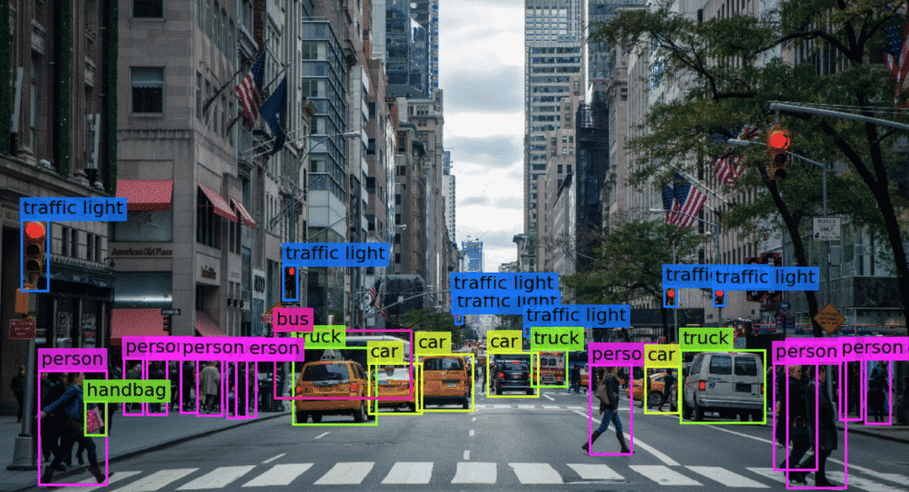

Data / IA / Computer Vision
Pipeline Computer Vision - Détection d'Objets
Construction d'une chaîne complète de production d'un modèle de Deep Learning, depuis l'acquisition et l'annotation des données jusqu'à l'inférence vidéo en temps réel avec OpenCV.

Contexte
Ce projet a été réalisé pour maîtriser l'ensemble de la chaîne de production d'un modèle de Computer Vision: partir d'une donnée brute, construire un dataset fiable, entraîner un modèle, évaluer ses limites puis le tester sur un flux vidéo en conditions proches du réel.
L'objectif n'était pas seulement d'obtenir une détection visuelle, mais de comprendre les décisions du modèle: qualité des annotations, biais du dataset, seuils de confiance, erreurs de confusion et comportement face aux mouvements rapides.
Dataset & annotation
- Extraction et constitution d'un jeu de données personnalisé de plus de 1 400 images.
- Annotation manuelle sous CVAT afin de produire des bounding boxes exploitables par YOLOv8.
- Contrôle qualité des labels, avec attention particulière aux occultations, objets partiellement visibles et scènes en mouvement.
- Organisation du dataset pour séparer proprement entraînement, validation et test avant l'apprentissage.
Entraînement YOLOv8
- Configuration du modèle YOLOv8 sous Python avec un format de données adapté à la détection d'objets.
- Suivi des métriques d'entraînement pour éviter une lecture trop superficielle des résultats.
- Analyse de la mAP et des courbes précision-rappel afin d'identifier les classes plus fragiles.
- Ajustement des seuils de confiance pour conserver des détections utiles en inférence vidéo.
Analyse des limites
- Identification de confusions entre certains objets visuellement proches ou partageant des couleurs similaires.
- Observation de l'impact du flou de mouvement sur la stabilité des boîtes de détection.
- Étude des cas d'occultation pour comprendre quand le modèle perd une cible ou réduit sa confiance.
- Transformation de ces erreurs en axes d'amélioration: enrichissement du dataset, meilleure diversité de scènes et annotations plus homogènes.
Inférence temps réel
Le résultat final est un script d'inférence qui utilise OpenCV pour lire un flux vidéo, appliquer le modèle YOLOv8 image par image, filtrer les prédictions selon un seuil de confiance et afficher les objets détectés avec leurs classes et scores.
1 400+ images
Dataset personnalisé annoté sous CVAT pour maîtriser la qualité de la donnée.
Analyse mAP
Lecture des performances au-delà du score global, avec courbes précision-rappel.
OpenCV temps réel
Pipeline d'inférence appliqué directement sur vidéo avec filtrage par confiance.